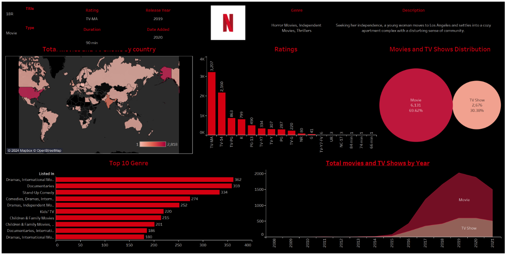
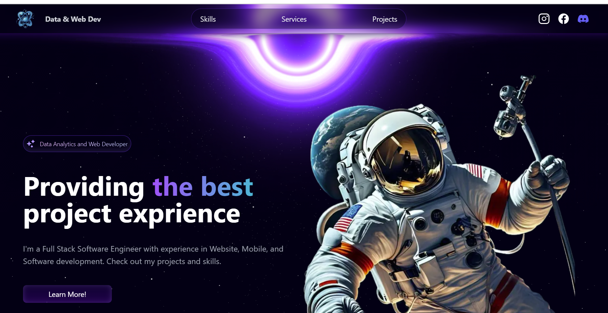

# About Me
### ** Hi All, I’m Pooja Sukhdeve Computer Science Graduate Student · Data Analyst · Web Developer**
Hi, I’m a passionate Computer Science graduate student at Boston University, with 5+ years of hands-on experience in software development, web development, and data analytics. I specialize in building scalable, accessible, and user-centric solutions. I’m proficient in Python, R, SQL, JavaScript, and I’m skilled at transforming complex data into actionable insights using tools like Tableau and SHAP.
My journey includes developing accessible learning modules for visually impaired users, leading award-winning hackathon teams, and contributing to both academic research and innovative industry projects.
Services

Data Analytics & Visualization
Unlock actionable insights from complex data. - Data wrangling & cleaning
- Predictive modeling
- Dashboards & visualization

Software & Web Development
Robust web frontend & backend solutions. - Full-stack dev
- Responsive UI/UX
- API integration

Application Development
Delivering innovative and cutting-edge applications. - Testing & QA
- Deployment & Maintenance
- System Architecture
Selected Projects in Data Analytics & Machine Learning
Exoplanet Data Analysis with SHAP
Leveraged ML models (Random Forest, Gradient Boosting) to analyze exoplanet datasets with 75% accuracy.
Impact: Used SHAP to identify key features driving exoplanet detection.


BRFSS Health Data Analytics
Analyzed BRFSS data to predict disease risk with 84.3% accuracy using SHAP.
Netflix Data Visualization Dashboard

Space Theme Website Portfolio
 
Visualization Module for Python (Research Project)
Interactive tool to teach programming to visually impaired learners.
View Code on GitHub
Technical Skills
- Programming Languages: Python, R, SQL, JavaScript, TypeScript, HTML5, CSS, Java, PHP
- Web Development: Node.js, React, Angular, jQuery, Bootstrap, API Integration, Git
- Data Visualization: Tableau, Power BI, Matplotlib, Seaborn, Pandas, NumPy, SHAP, Excel
- Data Engineering: OpenCV, Spark Apache, AWS
- Other Tools: GitHub, Outlook, R Studio, Jupyter, SQLite
Contact Me
Feel free to reach out or connect on social media!